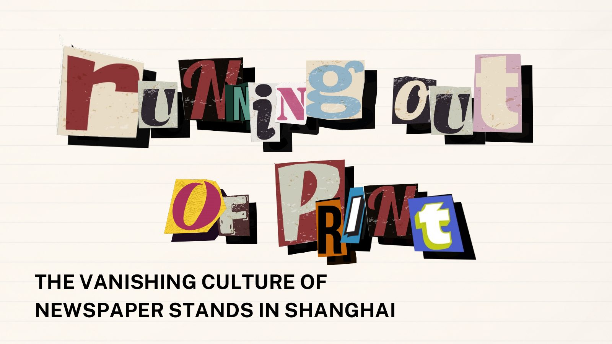

2023-2024
Research Proposal
Drawing on literature, media and economic trends, and psychology, this project investigates how the decline of print media leaves Shanghai’s elderly generation socially isolated, and responds with a mobile newsstand cart of paper magazines, CDs and tapes that recreates the familiar atmosphere they have lost.
RESEARCH PROPOSAL
/
Slide 01 of 08